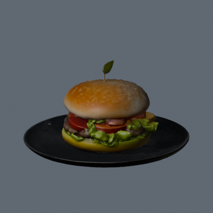
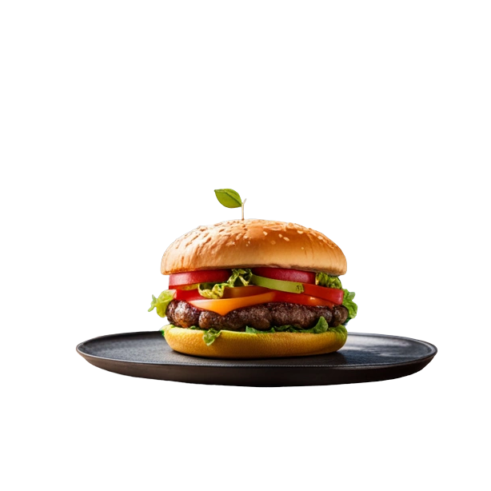
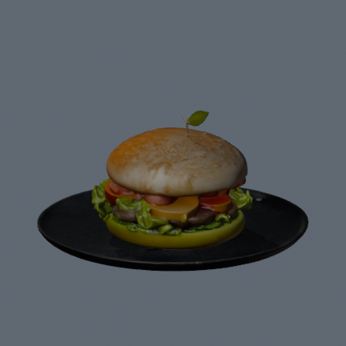
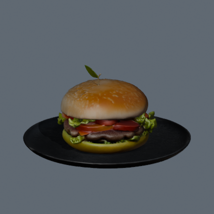
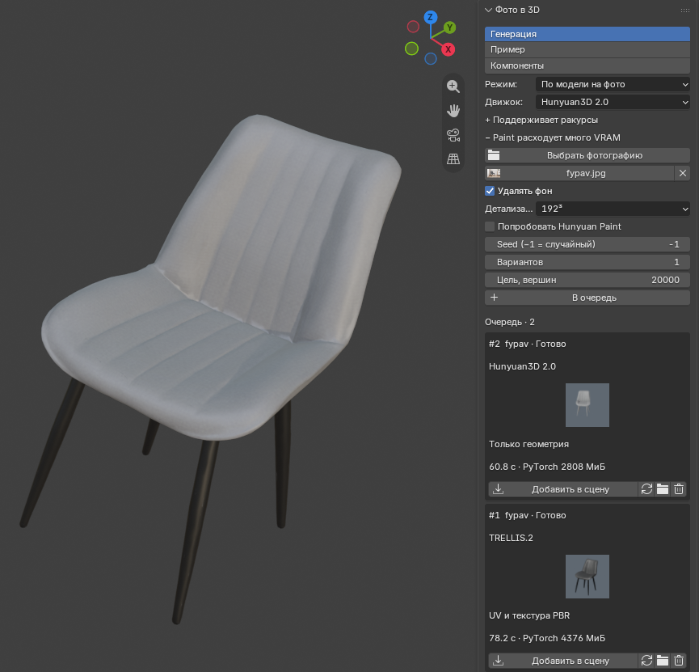

Drop or paste photos
Drop a JPG or PNG onto Choose photo or a preview. Paste copied images and screenshots, including into individual Hunyuan3D view slots.
Turn a reference photo into a 3D asset. Run TRELLIS.2 or Hunyuan3D on your own GPU, preview the result in Blender, and export an FBX with texture files when available.
AI-assisted coding
v1.8.0 · Blender 5.3+ · Windows x64 · NVIDIA CUDA

Drop a JPG or PNG onto Choose photo or a preview. Paste copied images and screenshots, including into individual Hunyuan3D view slots.
Track downloads by bytes and installed components. Follow generation stages and sampling steps, or cancel and retry jobs from the sidebar.
Import the FBX into your scene or open its output folder to find the preview and any texture maps.
TRELLIS.2 creates materials. Hunyuan3D supports single and multiple views, with optional Hunyuan Paint.
Choose a model and download its weights, engine, and libraries together in Blender. Use the Components tab to add another model later.
Inference runs on your computer. Internet access is needed to download components.
This is a real TRELLIS.2 reconstruction from the bundled example. The two renders show the same exported mesh from different angles.



Input photo from the TripoSR examples. The generation shown here used TRELLIS.2.

Tested with Blender 5.3 on Windows 11 x64, an RTX 4060 Ti with 8 GB VRAM, a Ryzen 7 5700X, and 32 GB RAM.
Memory use varies by model, settings, and other apps. See the Windows TRELLIS.2 fork, Hunyuan3D documentation, and CUDA 12.8 driver notes.
SARD 3D Generator is an independent Blender extension by Rorosos. Each model and dependency has its own terms.